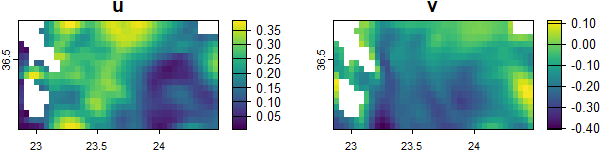

Introduction to EGCorrs
Nikolaos Nagkoulis, Antonios D. Mazaris, Christos Adam, Stelios Katsanevakis
Source:vignettes/Introduction.Rmd
Introduction.RmdThis research was conducted at the Department of Marine Sciences, University of the Aegean, Greece, supported by the European Union’s Horizon 2020 research and innovation programme HORIZON-CL6–2021-BIODIV-01–12, under grant agreement No 101059407, “MarinePlan – Improved transdisciplinary science for effective ecosystem-based maritime spatial planning and conservation in European Seas”.
Introduction to the EGCorrs Package (tutorial)
Biodiversity conservation can be substantially enhanced through the modeling of species corridors based on predicted behaviors. In this package, a dynamic evolutionary congestion game is formulated to generate species corridors. The primary advantage of this model lies in its utilization of vector fields as input layers, rendering it particularly suitable for simulating species distributions in marine environments characterized by current layers. The population of hypothetical agents is transported from an origin to a destination in space using a directed weighted graph, with each agent’s utility being maximized. An equilibrium state is reached after numerous iterations, illustrating the paths selected by the agents. Furthermore, a congestion parameter is incorporated to represent the tendency of populations to aggregate. Detailed presentation of the algorithm and its theoretical background is done by Nagkoulis et al. (forthcoming).
Installation
Development version of the package can be installed using:
if (!require(remotes)) install.packages("remotes")
remotes::install_github("cadam00/EGCorrs")Illustration example
Packages required in this vignette are listed and imported below:
## Linking to GEOS 3.12.1, GDAL 3.8.4, PROJ 9.3.1; sf_use_s2() is TRUE## terra 1.7.83## Breaking News: tmap 3.x is retiring. Please test v4, e.g. with
## remotes::install_github('r-tmap/tmap')
tmap_mode("view")## tmap mode set to interactive viewingCurrents information about the flow directions is usually split into
horizontal (\(u\)) and vertical (\(v\)) components, regarding the horizontal
and the vertical flow of the currents, respectively. As an example we
use a cropped subset of the Aegean Sea site (Clementi et al., 2021) provided in the form of
SpatRaster elements. In Figure 1
these two directions of components \(u\) and \(v\) are presented. This can be plotted
using the following:
# Get example u and v components
component_u <- get_component_u()
component_v <- get_component_v()
# Plot each component
par(mfrow=c(1,2), las=1)
plot(component_u, main="u")
plot(component_v, main="v")
Figure 1: Currents \(u\) (left) and \(v\) (right) components.
In Figure 2 an example of one origin and
one destination area is used, using a subset of the NATURA 200 data
(European Environment Agency, 2023) at this cropped area of Aegean
Sea is utilized. For illustration purposes, the area around the left
island (Kythira) -in neon green- is considered as the origin area and
the area around the right island (Milos) -in mikado yellow- as the
destination area. Additional rows on each area could be added using
rbind, indicating more areas of the origin or destination
area should be taken into consideration by the analysis.
# Read origin area
origin_areas <- get_origin_areas()## Reading layer `origin_areas' from data source
## `C:\Program Files\R\R-4.4.2\library\EGCorrs\external\origin_areas\origin_areas.shp'
## using driver `ESRI Shapefile'
## Simple feature collection with 1 feature and 1 field
## Geometry type: POLYGON
## Dimension: XY
## Bounding box: xmin: 22.86969 ymin: 36.04912 xmax: 23.13855 ymax: 36.39421
## Geodetic CRS: WGS 84
# Read destination area
destination_areas <- get_destination_areas()## Reading layer `destination_areas' from data source
## `C:\Program Files\R\R-4.4.2\library\EGCorrs\external\destination_areas\destination_areas.shp'
## using driver `ESRI Shapefile'
## Simple feature collection with 1 feature and 1 field
## Geometry type: POLYGON
## Dimension: XY
## Bounding box: xmin: 24.3053 ymin: 36.62173 xmax: 24.49323 ymax: 36.75966
## Geodetic CRS: WGS 84
# Plot both of them
tm_shape(origin_areas) +
tm_polygons(col="#1AFF1A") +
tm_shape(destination_areas) +
tm_polygons(col="#FFC20A")
Figure 2: Origin on the left (Kythira) -neon green- and destination in the right (Milos) -mikado yellow.
Therefore, horizontal and vertical currents’ components, as well as
origin and destination areas, are the minimum spatial data requirements
for conducting an analysis using the EGCorrs package.
Additional non-spatial arguments of the function are about used like the
number of nearest neighbors (k_neighbors and
nearest_grid_nodes). For each one of the
niters iterations, npoints agents are added in
the game, whose behavior is affected by the setting of a parameter named
lambda (\(\lambda\)).
set.seed(42)
# Warnings are thrown because of reassuring that components u/v and
# origin/destination areas are intersecting
corridors <- EGCorrs(component_u = component_u,
component_v = component_v,
origin_areas = origin_areas,
destination_areas = destination_areas,
npoints = 10,
niters = 100)## |================================================================================================| 100%
## Warning messages:
## 1: attribute variables are assumed to be spatially constant throughout all
## geometries
## 2: attribute variables are assumed to be spatially constant throughout all
## geometriesThe final corridors and origin/destination points produced from the algorithm can be plotted using the following:
names(corridors$solution_edges)[6] <- "uₗ"
tm_shape(st_as_sf(corridors$net_result_congestion, "edges"))+
tm_lines(col = "black",alpha = 0.05) +
tm_shape(corridors$solution_edges) +
tm_lines(col = "uₗ",lwd="uₗ", scale=10,
palette=colorRampPalette(c("blue", "red"))(10), n=10)+
tm_shape(corridors$origin_points) + tm_dots(col="#1AFF1A", size=0.1) +
tm_shape(corridors$destination_points) + tm_dots(col="#FFC20A", size=0.1)## Legend for line widths not available in view mode.
Figure 3: Final solution of the algorithm. Stronger corridors origin on the left (Kythira) to the destination on the right (Milos) are indicated with more red and wider lines. The origin random points are in neon green and the destination points in mikado yellow.
Convergence of the algorithm can be seen using, for example, the following plot of \(RMSE(u_{l_{perc}})\):
# Restore device to a single plot
par(mfrow=c(1,1), las=1)
# Plot convergence of rmse_u_l_perc
plot(x = corridors$metrics_df$niters,
y = corridors$metrics_df$rmse_u_l_perc,
main = expression(RMSE(u[l[perc]])),
xlab = "Number of iterations",
ylab = "",
lwd = 2,
type = "l")
Figure 4: Convergence of the \(RMSE(u_{l_{perc}})\), representing the convergence of the selected corridors from the algorithm.
References
Clementi, E., Aydogdu, A., Goglio, A. C., Pistoia, J., Escudier, R., Drudi, M., Grandi, A., Mariani, A., Lyubartsev, V., Lecci, R., Cretí, S., Coppini, G., Masina, S., & Pinardi, N. (2021). Mediterranean Sea Physical Analysis and Forecast (CMEMS MED-Currents, EAS6 system) (Version 1) [Data set]. Copernicus Monitoring Environment Marine Service (CMEMS). https://doi.org/10.25423/CMCC/MEDSEA_ANALYSISFORECAST_PHY_006_013_EAS8. Last Access: 16/10/2024.
European Environment Agency. (2023). Natura 2000 data - the European network of protected sites. European Environment Agency. Retrieved from https://www.eea.europa.eu/en. Last Access: 16/10/2024.
Nagkoulis N, Mazaris A, Adam C, Katsanevakis S. (forthcoming). An Evolutionary Game Theoretic Model for Species Corridors Estimation.